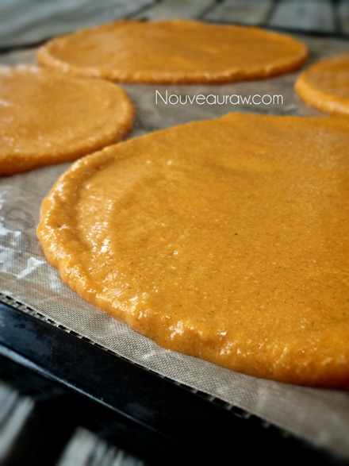
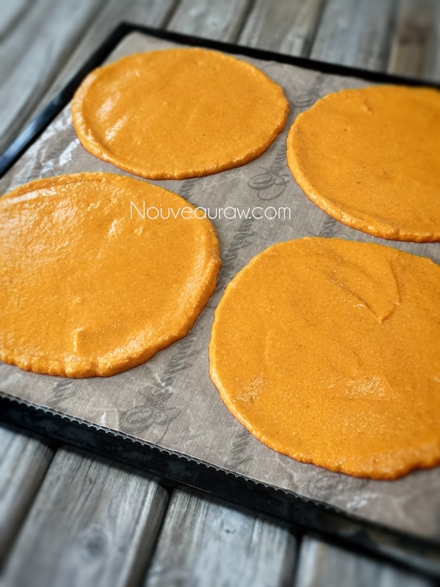

Roasted Red Pepper Wraps
~ vegan, gluten-free, nut-free ~
I woke up hungry, not just in the “mood” for breakfast but HUNGRY… I had a restless night (recipe developing heavily on the brain), and I didn’t get enough sleep. When this happens, I always wake up hungry. My tummy was…
Growling… churning…hollow and screaming for attention!
Lack of sleep causes a little hormone called ghrelin to elevate, and it triggers the body’s need for food. Furthermore, sleep deprivation stimulates the part of the brain that is responsible for recognizing food as a source of pleasure. Ever have one of those mornings? If so, you might want to evaluate your sleep.
After I had brushed my teeth, I splashed some water on my face and tousled my lovely bed-head locks… I headed for the kitchen. Since I was literally stirring in my sleep all night, I had to keep those creative juices flowing and start my day by dirtying every dish I own. (you think I am kidding… ha)
I turned on the morning news just in time to catch the weatherman; he said that it was going to be a cooler day, so soup sounded good. Between pulling out dishes and ingredients… I kept getting sidetracked with the laundry buzzer going off, the UPS man, tripping over a few dust bunnies, and my husband who kept walking by sneaking smooches…. and as the time passed, the temperature outside was rising. The house was growing warm and soup no longer sounded quite as appealing.
I looked at the partly blended soup and thought… Dip, no salad dressing, no dip, no salad dressing…. how about I divide the batter and make both! That way it can be enjoyed as a snack and for lunch. But by the time lunch rolled around Bob asked if I would go out to eat with him. How could I pass up a date with my husband? There was no wavering in my mind. I walked away from my spatula and never looked back.
Once home, I returned to the kitchen, and the spatula was there… waiting for me, waiting for completion. I looked at my pile of dishes and my half-completed soup dip /salad dressing and thought that neither sounded too appealing at the moment. lol My tummy was now full, and all I wanted to do was clean up my mess, sit down and fan myself. But, I knew that I had to do something with this mixture, and something quick, my energy was wavering. What I didn’t know when I started this process… was that this creation was really destined to be a wrap! With what little energy I could muster up, I poured it out onto a dehydrator sheet and slide it into the
What I didn’t know when I started this process… was that this creation was really destined to be a wrap! With what little energy I could muster up, I poured it out onto a dehydrator sheet and slide it into the dehydrator. It’s a multidimensional recipe that can be a soup, a dip, a salad dressing, or a wrap! That’s a tall order for any recipe if you ask me. :) I hope you enjoy and have a happy day. amie sue
Ingredients:
yields 4 cups = 8 wraps (1/2 cup)
- 6 cups (610 g) diced zucchini
- 1 cup (206 g) diced roasted red peppers, not raw
- 1 ripe avocado (110 g)
- 1/4 cup raw coconut vinegar or lemon juice
- 1/3 cup flax seeds, ground
- 2 small garlic cloves
- 1 tsp smoked paprika powder
- 1 tsp Himalayan pink salt
- 1/8 tsp cayenne powder
Preparation:
- Place the zucchini, red peppers, avocado, vinegar, flaxseeds, garlic, paprika, salt, and cayenne in a blender. Blend to a smooth, puree-like texture.
- If you accidentally use too much cayenne, add 1 tsp of agave to mellow the heat out.
- To make this wrap more raw, you could use fresh bell peppers and a tad more smoked paprika… do it to taste.
- To keep raw, you can use fresh bell peppers and add a drop or two of liquid smoke.
- Measure out 1/2 cup per wrap. You can make 4 per dehydrator tray if you own an Excalibur. Spread to about 1/4″ thickness.
- Make sure that you spread the batter evenly, so it dries evenly.
- Dry at 115 degrees for roughly 4-6 hours. Once they are dry enough, peel them off and place them on the mesh sheet, sticky side up.
- Continue to dry for 1-2 hours… until pliable but no longer sticky.
- Store in ziplock baggies with parchment paper in between each wrap for about 1-2 weeks.
- If the wraps happen to get too dry, either from the dehydrator or from being stored, spritz the backside with water to soften them.
Culinary Explanations:
- Why do I start the dehydrator at 145 degrees (F)? Click (here) to learn the reason behind this.
- When working with fresh ingredients it is important to taste test as you build a recipe. Learn why (here).
- Don’t own a dehydrator? Learn how to use your oven (here). I do however truly believe that it is a worthwhile investment. Click (here) to learn what I use.


© AmieSue.com